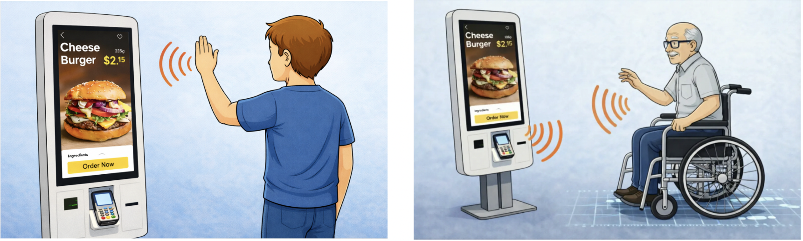
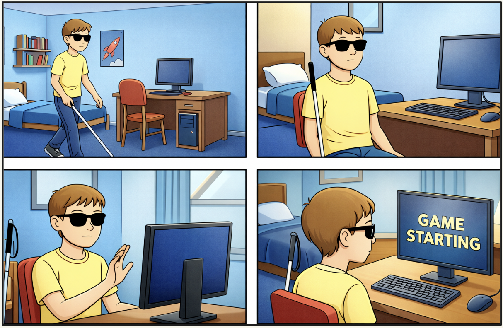
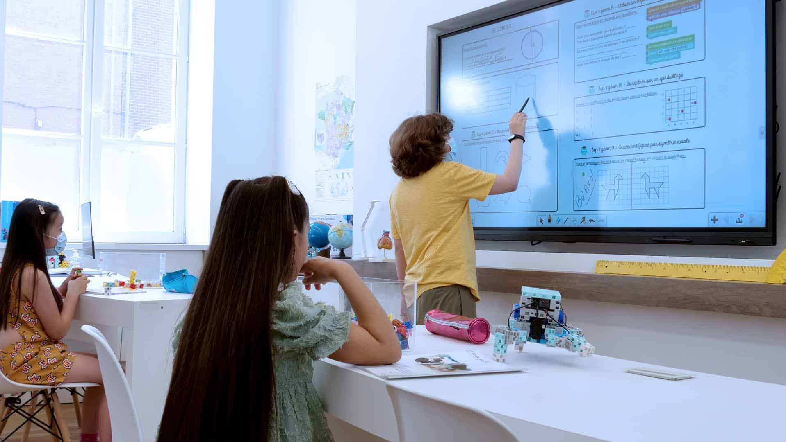

Use Cases
Home
AI-Autostart aims to make daily life more accessible for the blind, visually impaired, neurodivergent and those with motor limitations. It simplifies technology interactions by:
- Starting applications/programs without having to navigate operating system GUI
- Making touch-free interactions possible
Public Spaces
In public spaces like hospitals, train stations or restaurants, AI-Autostart allows for touch-free interaction with self-service kiosks. Some examples of scenarios where it could make a difference are:
- Kiosk UI automatically lowers when wheelchair user approaches it
- Kiosk allows touch free interaction when user holds hand up for a set amount of time → users that could benefit from this include but are not limited to those with motor limitations, neurodivergent individuals and germophobes

- "ChatGPT," ChatGPT, 2026. https://chatgpt.com/ (accessed Mar. 22, 2026).
Home
The No-GUI game player aims to provide the opportunity to the blind and visually impaired to play immersive online games - particularly ones that were designed with them in mind.
- Users can build up their own game by writing scenes.
- Generate from the user's ideas using our story building LLM.
- Generate from a published story, through giving a summary of it to our LLM.

Education
The No-GUI game engine empowers educators, creators and anyone else who would like to create their own story-based game to:
- Create games that mimic social scenarios or touch on important lessons to be used for educational purposes - particularly useful for autistic children.
- Recreate famous literary stories, making them more immersive for children who may otherwise not read them.

Use Case Diagram
- "StoryTribe: Free Online Storyboard Maker for Professionals," StoryTribe, 2026. https://storytribeapp.com/ (accessed Mar. 22, 2026).
- "Best Smart White Board for schools, Preschools & Colleges / High Schools," Speechi.com, 2025. https://speechi.com/best-smart-board-schools/ (accessed Mar. 22, 2026).